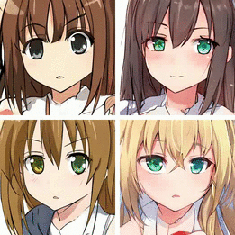

Closed-Form Factorization of
Latent Semantics in GANs
Latent Semantics in GANs
The Chinese University of Hong Kong

Anime Faces
| Pose | Mouth | Eye |
 |
 |
 |
Cats
| Posture (Left & Right) | Posture (Up & Down) | Zoom |
 |
 |
 |
Cars
| Orientation | Vertical Position | Shape |
 |
 |
 |
@article{shen2020closedform,
title = {Closed-Form Factorization of Latent Semantics in GANs},
author = {Shen, Yujun and Zhou, Bolei},
journal = {arXiv preprint arXiv:2007.06600},
year = {2020}
}


Comment: Interprets the face semantics emerging in the latent space of GANs with the help of off-the-shelf classifiers.